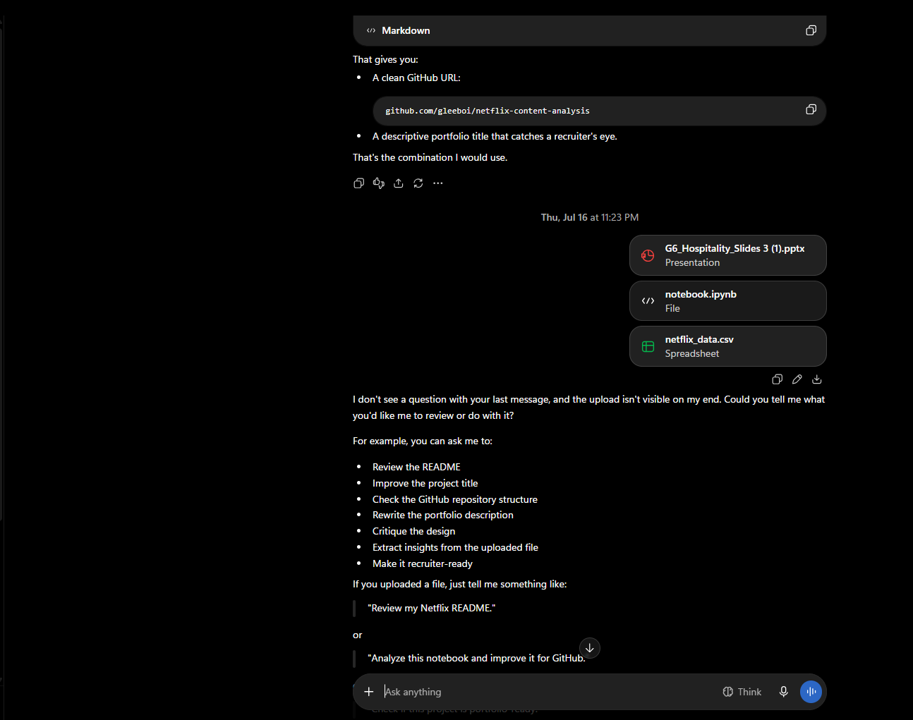
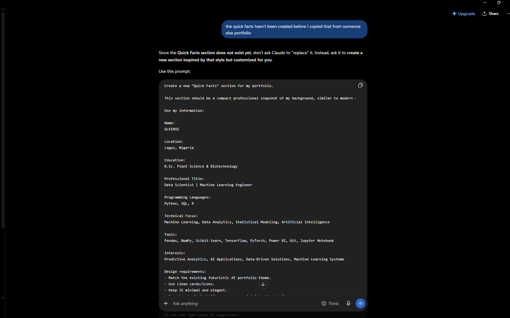
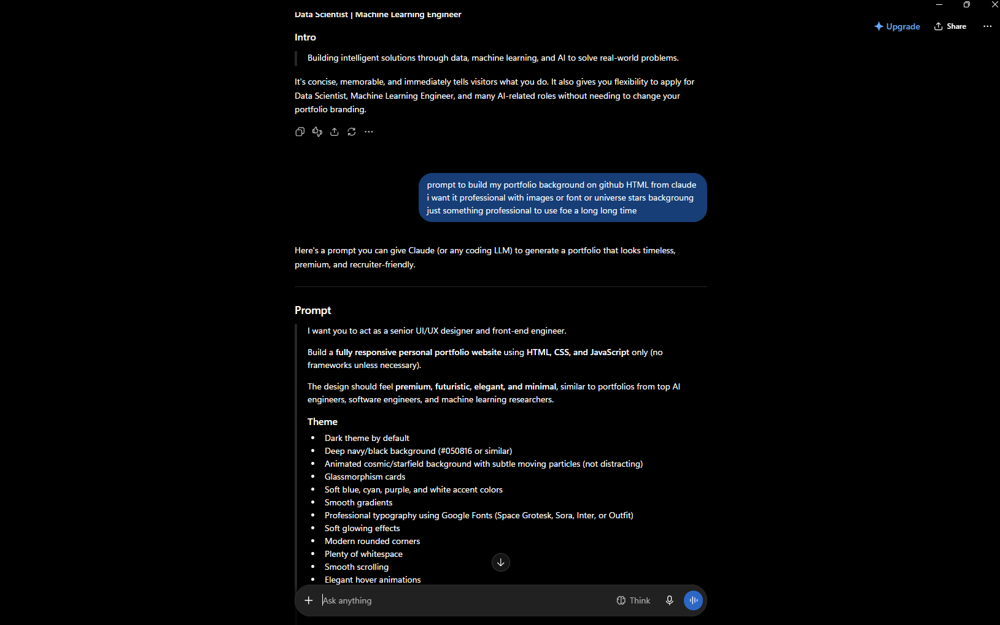
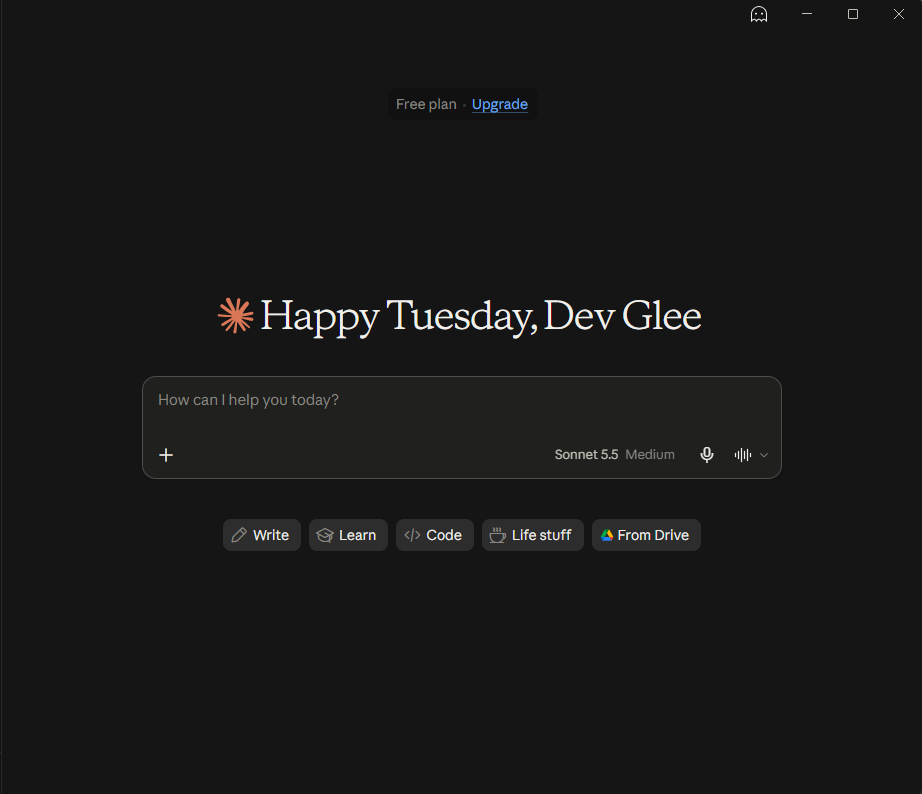
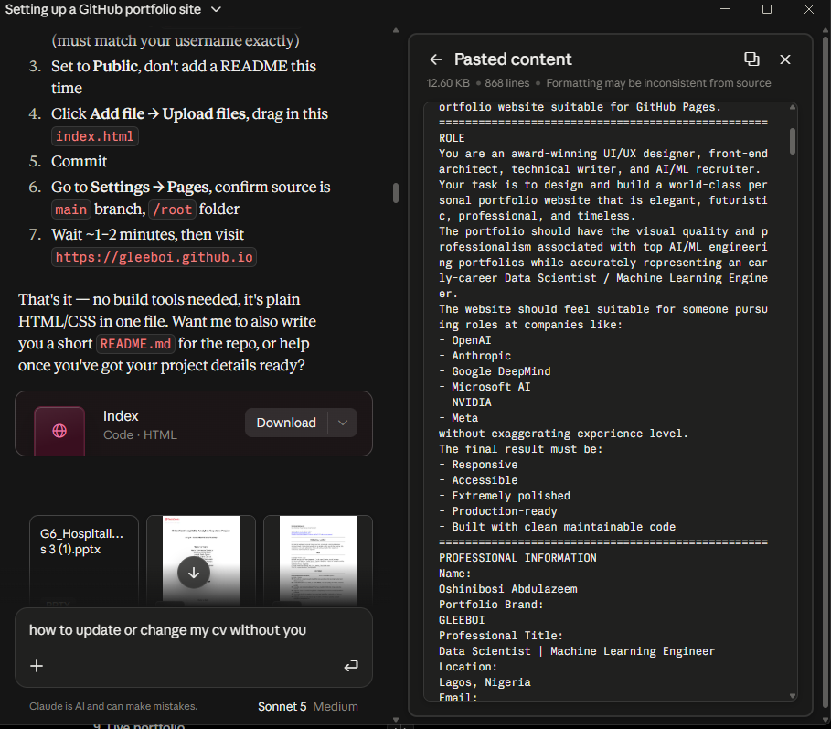
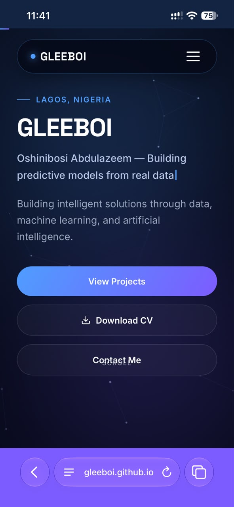
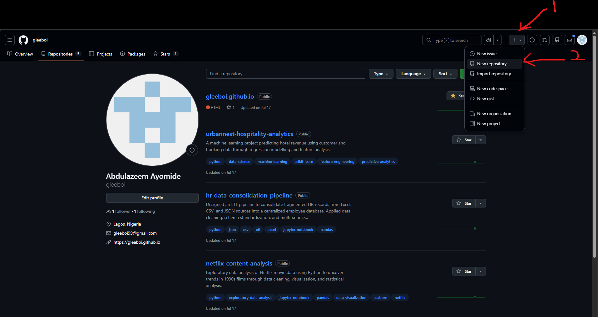
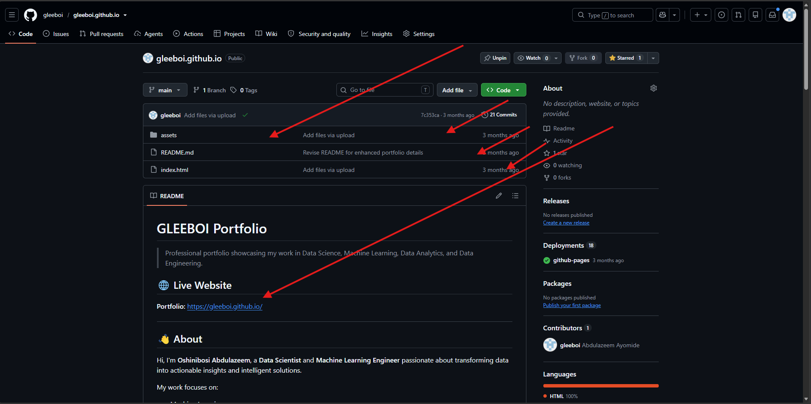
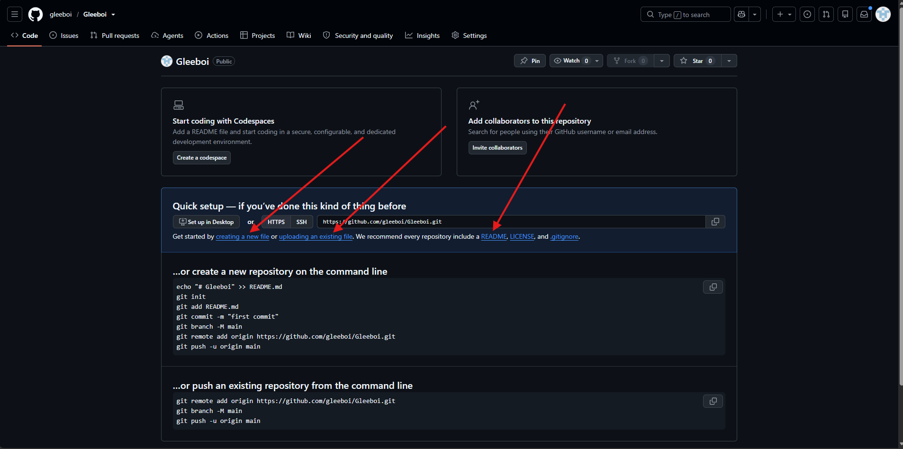
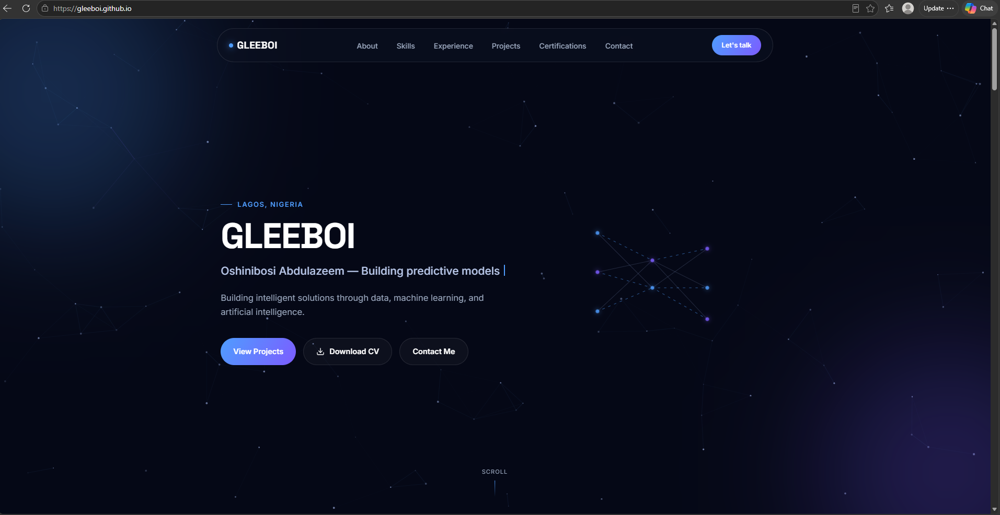

BEGINNER-FRIENDLY GUIDE
Build & Deploy Your Professional Portfolio Website
A beginner-friendly workflow using ChatGPT, Claude and GitHub Pages
Start Reading Download PDF Guide
Worked example: GLEEBOI · Data Scientist | Machine Learning Engineer
SECTION 01 OF 24· PREPARE
1. What This Guide Does
This is not a guide that assumes you already know HTML, CSS, JavaScript, Git or GitHub. It treats the website as a small project and explains the handoff between AI tools and the human.
The basic idea is simple:
- You provide the truth: your CV, projects, certifications, links, experience and preferences.
- ChatGPT helps organize your information, identify gaps, prepare instructions and review the finished portfolio.
- Claude acts as the website-building partner. It can generate and edit the HTML/CSS/JavaScript files from your instructions.
- GitHub stores the website files and can publish them through GitHub Pages.
- You perform the final human check before sending the link to recruiters.
The overall journey
SECTION 02 OF 24· PREPARE
2. What You Will Build
The finished result is a professional static portfolio website. A static site is a collection of files that the browser can load directly. For this workflow, you do not need a backend server.
The GLEEBOI example uses a futuristic, restrained data/AI aesthetic rather than a generic template. The original design brief specifies HTML5, CSS3 and vanilla JavaScript, with no Bootstrap, Tailwind or React, and emphasizes a premium visual language inspired by products such as OpenAI, Vercel, Linear, Anthropic, GitHub, Framer and Stripe without copying them.
Recommended portfolio sections
| Section | Purpose |
|---|---|
| Hero | Immediately tells a recruiter who you are and what you do. |
| About | Provides professional context without turning into a long biography. |
| Quick Facts | Gives a fast snapshot of education, location, focus, tools and interests. |
| Skills | Shows relevant technical capabilities. |
| Experience | Shows professional or internship evidence. |
| Projects | Provides proof that you can apply your skills. |
| Certifications | Provides verifiable learning evidence. |
| CV / Resume | Lets recruiters download your current CV. |
| Contact | Makes it easy to email, view LinkedIn or visit GitHub. |
A strong portfolio is not simply a pretty homepage. Its job is to reduce recruiter uncertainty: Who are you? What can you do? Have you built anything? Can I verify it? How do I contact you?
SECTION 03 OF 24· PREPARE
3. The Three-Person Workflow
Think of the process as a small team where each member has a different responsibility.
| Role | Main job | Do not delegate blindly |
|---|---|---|
| You | Provide accurate information, make decisions, approve final content. | Your identity, truth, final approval. |
| ChatGPT | Organize information, identify missing details, draft instructions, review. | Do not assume unknown facts. |
| Claude | Generate and edit the website files, implement design and functionality. | Do not allow invented facts or destructive rewrites without checking. |
This separation makes the workflow easier to debug. If the website looks wrong, ask Claude to fix the implementation. If the information is wrong, return to ChatGPT and your source documents.
SECTION 04 OF 24· PREPARE
4. What to Prepare Before You Start
Create one folder on your computer called something like Portfolio Materials. Put copies of your source files there.
Recommended materials
- Your latest CV in PDF format.
- Project reports, slide decks, notebooks or documentation you want represented.
- Certificates and credential links.
- Your GitHub profile URL.
- Your LinkedIn URL.
- A professional email address.
- A professional photograph only if you genuinely want one on the site.
- Any existing portfolio files if you are updating an old website rather than starting from zero.
For the GLEEBOI example, the portfolio work referenced a CV, Python certificates, a hospitality capstone slide deck and capstone documentation. The original prompt explicitly instructed Claude to analyze uploaded files rather than invent project details.
SECTION 05 OF 24· BUILD · STEP 1
5. Step 1: Give ChatGPT Your Information
The Step 1 prompt below.
Upload your CV in a new ChatGPT conversation, then paste and send the prompt.
Anything missing from the CV is labelled “Not provided” — nothing is invented.
Start with your CV because it is the most compact source of your professional identity.
In ChatGPT:
- Start a new conversation for the portfolio project.
- Upload your CV using the attachment button.
- Tell ChatGPT that the CV is the source of truth for your professional history.
- Ask it to extract your information into clear categories.

Copy-ready prompt
I am building a professional personal portfolio website.
I have uploaded my current CV. Treat it as a source of truth.
Extract and organize the information into:
1. Name and professional title
2. Professional summary
3. Education
4. Work experience
5. Internships
6. Technical skills
7. Programming languages
8. Tools and platforms
9. Projects
10. Certifications
11. Contact information
12. Portfolio-relevant achievements
13. Missing information that I should provide
Do not invent facts. If something is not in the CV, label it as "Not provided."
Keep the wording concise and suitable for a Data Scientist / Machine Learning Engineer portfolio.
SECTION 06 OF 24· BUILD · STEP 2
6. Step 2: Ask ChatGPT to Find Missing Information
The Step 2 prompt below.
Send it in the same conversation.
You have a checklist split into A–D, with a reason for each missing item.
A portfolio needs more than a CV. Ask ChatGPT to identify the missing pieces before you build.
Using the CV information above, create a "Portfolio Information Checklist".
Separate the checklist into:
A. Already known
B. Missing but necessary
C. Optional
D. Information I should NOT invent
For every missing item, explain why it matters to a recruiter.
Pay special attention to:
- project links
- GitHub repositories
- certification verification links
- project outcomes
- tools actually used
- employment dates
- contact links
- CV download file
- professional title
- short hero tagline
Do not fill the missing fields with guesses.Example of a good result
| Field | Status | Action |
|---|---|---|
| GitHub | Known | Use the exact URL. |
| Known | Use the exact URL. | |
| Project result | Missing | Ask the user or inspect project documentation. |
| Certification date | Missing | Use credential evidence if available. |
| Years of experience | Unknown | Do not invent. |
SECTION 07 OF 24· BUILD · STEP 3
7. Step 3: Ask ChatGPT to Build Your Claude Prompt
The Step 3 prompt below.
Send it to ChatGPT, then copy the Claude master prompt it writes.
The master prompt includes rules against invented information and a final QA checklist.
Now ask ChatGPT to convert the organized information into a detailed build brief for Claude.
Create a master prompt for Claude to build my portfolio website.
The prompt must include:
- professional identity
- target roles
- visual direction
- technical constraints
- required sections
- exact verified contact links
- CV download requirements
- project presentation requirements
- certification requirements
- responsive/mobile requirements
- accessibility requirements
- performance requirements
- SEO requirements
- file/folder structure
- rules against invented information
- a final QA checklist
Write the prompt so Claude can execute it as a senior front-end developer,
UI/UX designer and technical recruiter.
Do not invent any personal information.For GLEEBOI, the source brief establishes the identity as Data Scientist | Machine Learning Engineer, the tagline Building intelligent solutions through data, machine learning, and artificial intelligence., and the futuristic but restrained visual direction.

SECTION 08 OF 24· BUILD · STEP 4
8. Step 4: Open Claude and Prepare the Workspace
Open Claude and create a conversation dedicated to the portfolio. The exact interface may change, but the important concept is that Claude needs access to the source files and a clear build instruction.
Before sending the master prompt:
- Upload the CV.
- Upload relevant project documentation.
- Upload certificates if you want Claude to inspect them.
- Upload existing website files if you are updating an existing site.
- Tell Claude what is authoritative and what is only inspiration.

SECTION 09 OF 24· BUILD · STEP 5
9. Step 5: Send the Master Website Prompt
Your master prompt, plus the instruction block below.
Send it in the Claude conversation where your files are already uploaded.
Claude returns a concise change summary.
The master prompt should tell Claude what to build, what not to change, what files to create, and how to verify the result.
A strong prompt has six layers
- Identity: who the website represents.
- Design: visual system, typography, spacing, motion and responsive behavior.
- Content: sections and exact information.
- Engineering: HTML/CSS/JavaScript structure, accessibility and performance.
- Evidence: CV, projects and credentials.
- QA: a final verification pass before declaring the work finished.
The GLEEBOI prompt specifically requests HTML5, CSS3 and vanilla JavaScript, with no Bootstrap, Tailwind or React, and a clean production-ready structure.
Important instruction to include
Before changing any existing file:
1. Inspect the current structure.
2. Preserve useful content.
3. Do not remove sections unless they are explicitly approved.
4. Do not invent facts.
5. Do not replace real links with placeholders.
6. After editing, check every internal and external link.
7. Return a concise change summary.
SECTION 10 OF 24· TEST · STEP 6
10. Step 6: Review the Website Claude Creates
Do not immediately publish the first version. First inspect it like a recruiter and then like a developer.
Recruiter review
- Can I understand the person's role within five seconds?
- Is the professional title clear?
- Is the strongest project visible without hunting?
- Can I find the CV quickly?
- Can I contact the person quickly?
- Does the site look intentional rather than like a template?
Technical review
- Do all navigation links work?
- Do project buttons go to the correct destinations?
- Does the CV open?
- Do images load?
- Does the site work on a phone?
- Are there console errors?
- Are files referenced with correct relative paths?
SECTION 11 OF 24· TEST · STEP 7
11. Step 7: Ask Claude to Run a Recruiter + Technical QA
The QA prompt below.
Send it as a separate message after the first build.
You received A (critical), B (important) and C (optional) lists; only A and B get fixed unless you approve C.
Use a separate QA instruction after the first build. This turns the model from creator into critic.
Perform a final QA review of this portfolio.
Act simultaneously as:
1. a technical recruiter
2. a senior machine learning engineer
3. a front-end engineer
4. a UX reviewer
Check:
- first impression
- professional branding
- clarity of target role
- project credibility
- technical terminology
- broken or placeholder links
- CV download
- certification verification
- mobile responsiveness
- accessibility
- SEO basics
- performance risks
- console errors
- missing alt text
- navigation
- spelling and grammar
- inconsistent dates
- invented or unsupported claims
Do not rewrite everything automatically.
First produce:
A. Critical issues
B. Important improvements
C. Optional polish
Then fix only A and B unless I explicitly approve C.The original GLEEBOI brief similarly asks for a final review from the perspective of a Google AI recruiter, senior ML engineer and technical hiring manager, including first impression, technical credibility, project quality, ATS keywords, missing sections, wording and design.
SECTION 12 OF 24· TEST · STEP 8
12. Step 8: Test Links, Files, Mobile and Content
Before GitHub, test the site locally or inside the preview environment available to you.
Test every clickable item
- Logo / home link
- Navigation links
- View Projects
- Download CV
- GitHub
- Project repository links
- Credential verification links
Test the CV path
assets/
└── cv/
└── Abdulazeem_Ayomide_Data_Scientist_CV.pdfIf the HTML contains:
href="assets/cv/Abdulazeem_Ayomide_Data_Scientist_CV.pdf"then that exact folder and filename must exist relative to the HTML page. Capitalization and spelling matter on many hosting environments.
Pre-publish test checklist

SECTION 13 OF 24· DEPLOY · STEP 9
13. Step 9: Understand Your Website Files
You do not need to become a professional front-end developer to understand the basic structure.
portfolio/
├── index.html
├── css/
│ ├── style.css
│ ├── animations.css
│ └── responsive.css
├── js/
│ ├── app.js
│ └── particles.js
├── assets/
│ ├── images/
│ ├── icons/
│ ├── svg/
│ ├── cv/
│ └── certifications/
└── README.md| File / folder | What it does |
|---|---|
index.html | The main page structure and content. |
style.css | Main visual styling. |
animations.css | Motion and transition rules, if separated. |
responsive.css | Phone/tablet layout rules, if separated. |
app.js | Interactive behavior. |
particles.js | Background particle/neural effect, if used. |
assets/ | Images, icons, CVs, certificates and other files. |
README.md | Human-readable project documentation. |
SECTION 14 OF 24· DEPLOY · STEP 10
14. Step 10: Create the GitHub Repository
Your repository name, for example yourusername.github.io.
Use + → New repository → Create repository.
Visibility is Public if your plan requires it.
GitHub Pages can publish a repository as a website. For a personal user site, GitHub’s quickstart uses the repository name username.github.io.
Click-by-click
- Open GitHub in your browser and sign in.
- Click the + menu in the upper-right corner.
- Choose New repository.
- If you are creating a personal user site, enter your GitHub username followed by
.github.io. - Choose the appropriate visibility. For GitHub Free user sites, GitHub’s documentation states that the repository must be public.
- Optionally add a README.
- Click Create repository.
| Setting | Value |
|---|---|
| Owner | Your GitHub account |
| Repository name | yourusername.github.io |
| Description | Professional portfolio website |
| Visibility | Public, when required by your plan |

SECTION 15 OF 24· DEPLOY · STEP 11
15. Step 11: Upload the Website to GitHub
Your website files.
Upload them to the repository.
index.html is at the top level, not inside another folder.
Once the repository exists, upload the actual website files. The most important file is normally index.html. GitHub Pages looks for an entry file such as index.html at the top level of the publishing source.
Recommended upload structure
yourusername.github.io/
├── index.html
├── css/
├── js/
├── assets/
└── README.mdIf you upload a folder containing another folder, check that you did not accidentally create this:
yourusername.github.io/
└── portfolio/
└── index.htmlThat can cause a deployment to publish the wrong location depending on the selected source.


SECTION 16 OF 24· DEPLOY · STEP 12
16. Step 12: Turn On GitHub Pages
Branch main and folder /(root).
Settings → Pages → Deploy from a branch → Save.
Source, branch and folder show what you selected.
GitHub’s current documentation describes the branch-based flow as: repository → Settings → Pages → Build and deployment → Source → Deploy from a branch → choose branch and folder → Save.
Click-by-click
- Open your website repository.
- Click Settings.
- In the left sidebar, find the Pages area under the repository settings.
- Under Build and deployment, find Source.
- Select Deploy from a branch.
- Select the branch containing your website, commonly
main. - Select the publishing folder. For files stored at the repository root, select
/(root). - Click Save.
- Repository
- Settings
- Pages
- Build and deployment
- Deploy from a branch
main/(root)- Save
- Wait for deployment
- Open the generated URL
SECTION 17 OF 24· LAUNCH · STEP 13
17. Step 13: Open and Test the Live Website
Your published URL.
Open it, refresh, then try a private window and your phone.
Navigation, CV, links, images and CSS all work.
After saving the Pages configuration, GitHub builds and deploys the site. GitHub notes that publishing can take a few minutes and that changes can take up to about ten minutes to appear.
When the site is live:
- Open the published URL.
- Refresh the page.
- Open the site in an incognito/private window.
- Test on your phone.
- Test the CV download.
- Test LinkedIn and GitHub links.
- Click every navigation item.
- Look for broken images.
- Look for missing CSS.
- If something changed recently, allow a few minutes for deployment before assuming the deployment failed.
Live site verification

SECTION 18 OF 24· LAUNCH · STEP 14
18. Step 14: Updating the Website Later
The update prompt below.
Send it to Claude with the new source material.
The card is responsive, the link works, and the rest of the design is unchanged.
You do not need to rebuild the portfolio every time you earn a certificate or finish a project.
Use a small-change workflow
- Add the new source material.
- Ask ChatGPT to extract the new information and identify where it belongs.
- Ask Claude to modify only the relevant section.
- Tell Claude not to alter unrelated sections.
- Review the changed files.
- Test locally/preview.
- Commit the change to GitHub.
- Check the live site.
Only update the Certifications section.
Add this new certification using the information in the uploaded certificate.
Do not redesign the site.
Do not change the hero.
Do not change navigation.
Do not rewrite my existing experience.
Do not invent a date or credential number.
After editing, verify that:
1. the certification card is responsive
2. the credential link works
3. the existing design remains unchangedSECTION 19 OF 24· REFERENCE
19. Troubleshooting: Common Problems
| Problem | Likely cause | First action |
|---|---|---|
| Site is blank | index.html missing, wrong source folder, or HTML error. | Confirm index.html is at the top of the publishing source. |
| CSS is not loading | Wrong relative path. | Check href paths and capitalization. |
| Images are broken | Wrong image path or filename. | Check exact asset path and filename. |
| CV does not open | Wrong path or file not uploaded. | Compare the href with the actual repository path. |
| Old version appears | Deployment still processing or browser cache. | Wait a few minutes, then hard refresh/private window. |
| Claude removed something | Prompt allowed broad rewriting. | Restore from the previous version and use a targeted change prompt. |
| Claude invented details | Source material was incomplete or prompt was vague. | Remove the claim and instruct Claude to use only evidence. |
| Mobile layout is broken | Responsive CSS is incomplete. | Ask Claude to audit at mobile widths and fix only responsive rules. |
SECTION 20 OF 24· REFERENCE
20. How to Ask Claude for Safe Changes
The quality of the result often depends on how narrowly you define the change.
Bad request
Make the website better.Better request
Improve only the Projects section.
Goals:
- make project cards easier to scan
- keep the current color palette
- keep the current typography
- preserve all existing project information
- do not change the hero or navigation
- do not invent metrics
- keep all existing project links
Before editing, inspect the current HTML and CSS.
After editing, list exactly which files changed and what changed.This is the difference between giving Claude a destination and giving it a runway.
SECTION 21 OF 24· REFERENCE
21. The GLEEBOI Worked Example
This is what GLEEBOI did. Now replace it with your own information. The following example shows how the guide translates into a real portfolio brief. Replace the personal information with your own verified details — do not copy these values.
Example data
Identity
| Field | Worked example |
|---|---|
| Brand | GLEEBOI |
| Professional title | Data Scientist | Machine Learning Engineer |
| Hero tagline | Building intelligent solutions through data, machine learning, and artificial intelligence. |
| Location | Lagos, Nigeria |
| Education | B.Sc. Plant Science & Biotechnology |
| Languages | Python, SQL, R |
| Focus | Machine Learning, Data Analytics, Statistical Modeling, Artificial Intelligence |
Contact example
| Channel | Value |
|---|---|
| ayomideabdulazeem@gmail.com | |
| linkedin.com/in/abdulazeem-ayomide-28a5b6375 | |
| GitHub | github.com/gleeboi |
Your data
Fill these in from your own CV and accounts:
- Brand / name
- Professional title
- Hero tagline
- Location
- Education
- Languages and tools
- Focus areas
- Email, LinkedIn, GitHub
The original brief also specifies tools such as Pandas, NumPy, Scikit-learn, TensorFlow, PyTorch, Power BI, Git and Jupyter Notebook, plus interests in predictive analytics, AI applications, data-driven solutions and machine learning systems.
SECTION 22 OF 24· REFERENCE
22. Final Recruiter Checklist
Identity
Projects
Evidence
Engineering
Publishing
SECTION 23 OF 24· LAUNCH
23. Screenshots Used in This Guide
This guide uses real screenshots from the portfolio-building process where they provide useful visual guidance. When a real interface screenshot is unavailable, the instructions remain fully usable without one.
| # | Screenshot | Used in | Filename |
|---|---|---|---|
| 01 | ChatGPT conversation with project files attached | Section 5 | 01-chatgpt-upload.png |
| 02 | Portfolio information organized in ChatGPT | Section 5 | 02-chatgpt-extraction.png |
| 03 | A Claude build prompt created in ChatGPT | Section 7 | 11-chatgpt-claude-prompt.png |
| 04 | Claude’s new-conversation screen | Section 8 | 03-claude-workspace.png |
| 05 | A prompt pasted into Claude | Section 9 | 04-claude-prompt.png |
| 06 | The portfolio on a phone | Section 12 | 10-mobile-test.png |
| 07 | GitHub’s New repository form | Section 14 | 05-github-new-repository.png |
| 08 | The repository file list | Section 15 | 06-github-repository.png |
| 09 | GitHub’s quick-setup page | Section 15 | 12-github-quick-setup.png |
| 10 | The live portfolio | Section 17 | 09-live-site.png |
SECTION 24 OF 24· REFERENCE
24. Final Workflow: From CV to Live Portfolio
This is the entire process compressed into one repeatable sequence.
| # | Stage | What happens |
|---|---|---|
| 1 | Collect | CV + projects + certificates + links |
| 2 | Extract | ChatGPT organizes the facts |
| 3 | Gap-check | ChatGPT identifies missing information |
| 4 | Brief | ChatGPT creates the Claude build prompt |
| 5 | Build | Claude creates/edits the website |
| 6 | Review | You inspect the first version |
| 7 | QA | Claude audits recruiter + technical quality |
| 8 | Test | You verify links, files and mobile |
| 9 | Publish | GitHub repository + GitHub Pages |
| 10 | Verify | Open the live site and test again |
| 11 | Maintain | Make small evidence-based updates |
🚀 Ready to Launch?
Work through this last check before you send your link to anyone.
This button opens the GLEEBOI worked-example portfolio. Your own portfolio will have its own URL.
You gave ChatGPT the truth, gave Claude the plan, gave GitHub the files, and kept the final approval. When something changes, use the small-change workflow in Step 14 instead of starting again.
Reference links
- GitHub Pages Quickstart
- Publishing source documentation: GitHub Docs: Configuring a publishing source
Source note: portfolio-specific details in the GLEEBOI example were derived from the supplied portfolio prompt material.
END OF GUIDE